Machine Learning K-Means and KNN Methods From Scratch vs Scikit-learn
I. K-Means
Introduction
Can an unsupervised algorithm like K-Means, using only two numeric variables, discover meaningful groupings in the Palmer Penguins dataset—potentially aligning with the biological species labels?
This project explores the K-Means clustering algorithm by implementing it from scratch in Python and visualizing the algorithm’s behavior step-by-step. The objective is to gain a deeper understanding of how the algorithm works internally and how its decisions evolve over successive iterations.
In order to demonstrate this understanding in a real-world setting, we apply our custom implementation to the Palmer Penguins dataset, a biologically rich dataset that includes body measurements of penguins from three species: Adelie, Chinstrap, and Gentoo. Rather than using the labeled species information (as in supervised learning), we treat the dataset as unlabeled and attempt to uncover natural groupings of penguins using primarily two features: - Bill Length (mm) - Flipper Length (mm)
These two anatomical measurements are biologically meaningful because they vary across species due to differences in diet, habitat, and evolutionary adaptation. The hypothesis is that these differences are pronounced enough to allow a clustering algorithm like K-Means to separate the penguins into distinct groups that may correspond to their species.
Project Goals
- Implement the K-Means algorithm from scratch.
- Visualize the clustering process step-by-step to observe how centroids and cluster assignments change across iterations.
- Test the custom algorithm on both synthetic data and real-world data (the Palmer Penguins dataset).
- Compare results with Python’s built-in KMeans from scikit-learn to assess accuracy and behavior.
- Evaluate clustering quality using two key metrics (i) Within-Cluster Sum of Squares (WCSS) and (ii) Silhouette Score
- Determine the optimal number of clusters (K) using these metrics, by plotting results for K values ranging from 2 to 7.
Understanding the Data - Palmer Penguins Dataset
The Palmer Penguins dataset is a well-known real-world dataset used for classification and clustering tasks. It includes 330 rows of biometric data on three penguin species—Adelie, Chinstrap, and Gentoo—collected from islands in the Palmer Archipelago, Antarctica.
The 8 columns in the dataset are:
| Column Name | Description |
|---|---|
species |
Penguin species (Adelie, Chinstrap, or Gentoo) |
island |
Island where penguin was found (Biscoe, Dream, Torgersen) |
bill_length_mm |
Length of the penguin’s bill (beak) in millimeters |
bill_depth_mm |
Depth (thickness) of the bill in millimeters |
flipper_length_mm |
Length of the flipper in millimeters |
body_mass_g |
Body mass in grams |
sex |
Sex of the penguin (male, female, or missing) |
year |
Year in which the observation was recorded |
EDA and Summary Statistics
Code
import pandas as pd
# Read the CSV file
df_pp = pd.read_csv("palmer_penguins.csv")
# Display the first few rows
df_pp.head()| species | island | bill_length_mm | bill_depth_mm | flipper_length_mm | body_mass_g | sex | year | |
|---|---|---|---|---|---|---|---|---|
| 0 | Adelie | Torgersen | 39.1 | 18.7 | 181 | 3750 | male | 2007 |
| 1 | Adelie | Torgersen | 39.5 | 17.4 | 186 | 3800 | female | 2007 |
| 2 | Adelie | Torgersen | 40.3 | 18.0 | 195 | 3250 | female | 2007 |
| 3 | Adelie | Torgersen | 36.7 | 19.3 | 193 | 3450 | female | 2007 |
| 4 | Adelie | Torgersen | 39.3 | 20.6 | 190 | 3650 | male | 2007 |
Code
#Summary statistics
df_pp.describe()| bill_length_mm | bill_depth_mm | flipper_length_mm | body_mass_g | year | |
|---|---|---|---|---|---|
| count | 333.000000 | 333.000000 | 333.000000 | 333.000000 | 333.000000 |
| mean | 43.992793 | 17.164865 | 200.966967 | 4207.057057 | 2008.042042 |
| std | 5.468668 | 1.969235 | 14.015765 | 805.215802 | 0.812944 |
| min | 32.100000 | 13.100000 | 172.000000 | 2700.000000 | 2007.000000 |
| 25% | 39.500000 | 15.600000 | 190.000000 | 3550.000000 | 2007.000000 |
| 50% | 44.500000 | 17.300000 | 197.000000 | 4050.000000 | 2008.000000 |
| 75% | 48.600000 | 18.700000 | 213.000000 | 4775.000000 | 2009.000000 |
| max | 59.600000 | 21.500000 | 231.000000 | 6300.000000 | 2009.000000 |
Based on the summary statistics of numerical columns of the Palmer Penguins dataset, we can derive several meaningful insights that help explain the biological diversity captured and its relevance for clustering with K-Means.
The variable bill_length_mm exhibits a broad range, from 32.1 mm to 59.6 mm, with an average of approximately 44.0 mm. This wide spread indicates that penguin species differ significantly in their bill lengths. Such variability is ideal for clustering because K-Means relies on differences in feature values to form distinct groups. In contrast, bill_depth_mm shows a narrower range—from 13.1 mm to 21.5 mm—with a mean of about 17.2 mm. The smaller standard deviation (~2.0 mm) suggests that bill depth varies less across the population compared to bill length.
Flipper_length_mm is another variable with considerable variation. It ranges from 172 mm to 231 mm and has a mean of approximately 201 mm. The diversity in flipper length likely reflects adaptations related to swimming capability and foraging behavior, which differ among species. This feature, like bill length, provides strong separation potential for clustering due to its wider distribution.
The variable body_mass_g further emphasizes species-level differences. The average body mass is around 4207 grams, but the values range significantly—from 2700 g to 6300 g—with a high standard deviation of about 805 g. This variability in body size is consistent with ecological roles and physical adaptations of different penguin species. Although body mass is not used in the current clustering task, it reinforces the biological diversity within the dataset.
The year variable indicates that the observations were collected over a three-year span (2007–2009), with a fairly even distribution across years. This is confirmed by the median year being 2008 and the 25th and 75th percentiles falling on 2007 and 2009, respectively. There’s no indication of temporal bias, so time should not confound the clustering based on morphology.
In summary, the wide variation in bill length and flipper length across penguins provides a solid foundation for applying K-Means clustering. These two features capture key anatomical differences that are likely to align closely with species boundaries, making them well-suited for unsupervised segmentation.
Scatter Plot: Bill Length vs. Flipper Length
Purpose: Visualize the raw 2D feature space you’ll use for K-Means.
Code
import seaborn as sns
import matplotlib.pyplot as plt
# Drop rows with missing values in the relevant columns
df_clean = df_pp.dropna(subset=['bill_length_mm', 'flipper_length_mm', 'species'])
# Create scatter plot of bill length vs flipper length colored by species
plt.figure(figsize=(8, 6))
sns.scatterplot(
data=df_clean,
x='bill_length_mm',
y='flipper_length_mm',
hue='species',
size='body_mass_g', # size by body mass to hint at density/variation
sizes=(20, 200),
alpha=0.7,
palette='Set2'
)
plt.title("Scatter Plot of Bill Length vs Flipper Length by Species")
plt.xlabel("Bill Length (mm)")
plt.ylabel("Flipper Length (mm)")
plt.legend(title="Species")
plt.grid(True)
plt.tight_layout()
plt.show()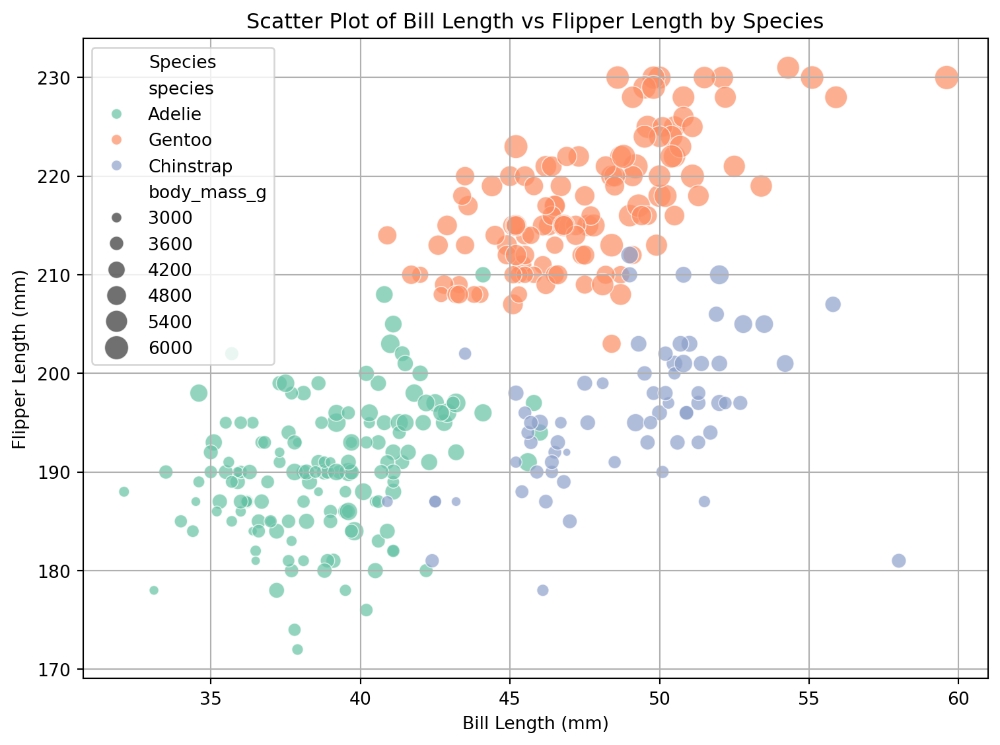
This scatter plot of bill length vs. flipper length, color-coded by species and sized by body mass, provides strong visual evidence that these two features are effective for distinguishing penguin species—making them ideal for K-Means clustering. Since K-Means depends on distance in feature space, these two axes provide meaningful gradients along which to differentiate observations. It is also to be noted that, while Adelie and Gentoo appear highly separable, there may be partial overlap between Adelie and Chinstrap, which could lead to some misclassification in an unsupervised setting.
Pair Plot
Purpose: Explore relationships between more features like bill depth or body mass.
Code
# Use histplot on the diagonal instead of KDE to avoid rendering issues with fill_between
# Select relevant columns
features = ['bill_length_mm', 'bill_depth_mm', 'flipper_length_mm', 'body_mass_g', 'species']
# Drop rows with missing values in any of the selected columns
df_pairplot_clean = df_pp[features].dropna()
sns.pairplot(df_pairplot_clean, hue='species', corner=True, palette='Set2', diag_kind='hist')
plt.suptitle("Pair Plot of Penguin Features by Species", y=1.02)
plt.show()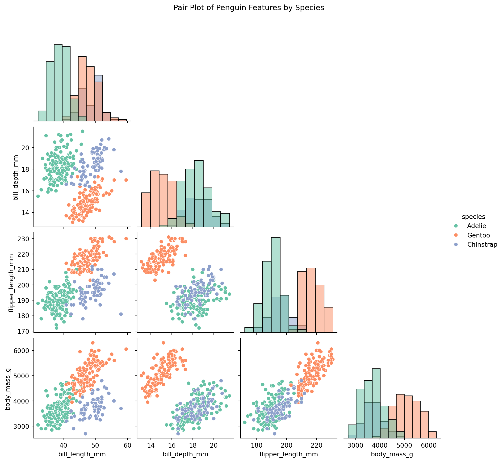
This visual exploration justifies the choice of features (bill_length_mm, flipper_length_mm) and supports the idea that natural groupings exist. It also highlights potential ambiguity between Chinstrap and Adelie, which sets up a realistic expectation: K-Means might cleanly separate some species (like Gentoo), while struggling more with overlapping ones. Overall, the pair plot strengthens the argument that K-Means clustering can uncover meaningful biological patterns from unlabelled morphological data—especially when visual and statistical structure aligns this clearly.
Histogram or KDE Plots
Purpose: Check distribution shape of features.
Code
# Select numerical features relevant for clustering
numeric_features = ['bill_length_mm', 'bill_depth_mm', 'flipper_length_mm', 'body_mass_g']
df_hk_clean = df_pp[numeric_features].dropna()
# Create histogram/KDE plots to check feature distributions
plt.figure(figsize=(12, 8))
for i, col in enumerate(numeric_features, 1):
plt.subplot(2, 2, i)
sns.histplot(df_hk_clean[col], kde=True, color='steelblue')
plt.title(f"Distribution of {col.replace('_', ' ').title()}")
plt.xlabel(col)
plt.ylabel("Frequency")
plt.tight_layout()
plt.suptitle("Histogram and KDE Plots of Numerical Features", y=1.03)
plt.show()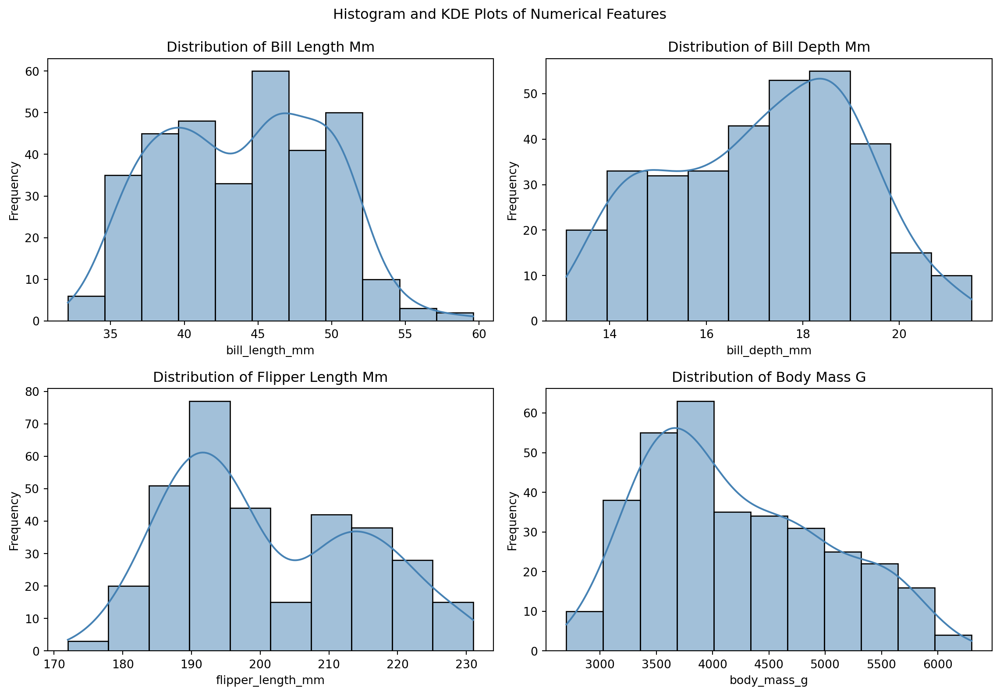
The histogram and KDE plots above reveal the distribution shapes of the numerical features used in clustering—bill length, bill depth, flipper length, and body mass—which is essential for evaluating their suitability for K-Means. All variables exhibit reasonably continuous and near-symmetric distributions, with slight right-skewness in body mass and flipper length, indicating some heavier or larger penguins. The presence of multiple peaks in some features (e.g., flipper length) may reflect underlying group structure such as species differences, which supports the idea that natural clusters exist in the data. These observations confirm the importance of feature standardization before applying K-Means, as the algorithm assumes spherical clusters and is sensitive to feature scale. Overall, these plots validate the chosen features and strengthen the case for using unsupervised clustering to uncover biologically meaningful patterns.
Heatmap of Feature Correlation
Purpose: Understand multicollinearity.
Code
corr_matrix = df_hk_clean .corr()
# Plot heatmap
plt.figure(figsize=(8, 6))
sns.heatmap(corr_matrix, annot=True, cmap='coolwarm', fmt=".2f", linewidths=0.5, square=True)
plt.title("Correlation Heatmap of Penguin Features")
plt.show()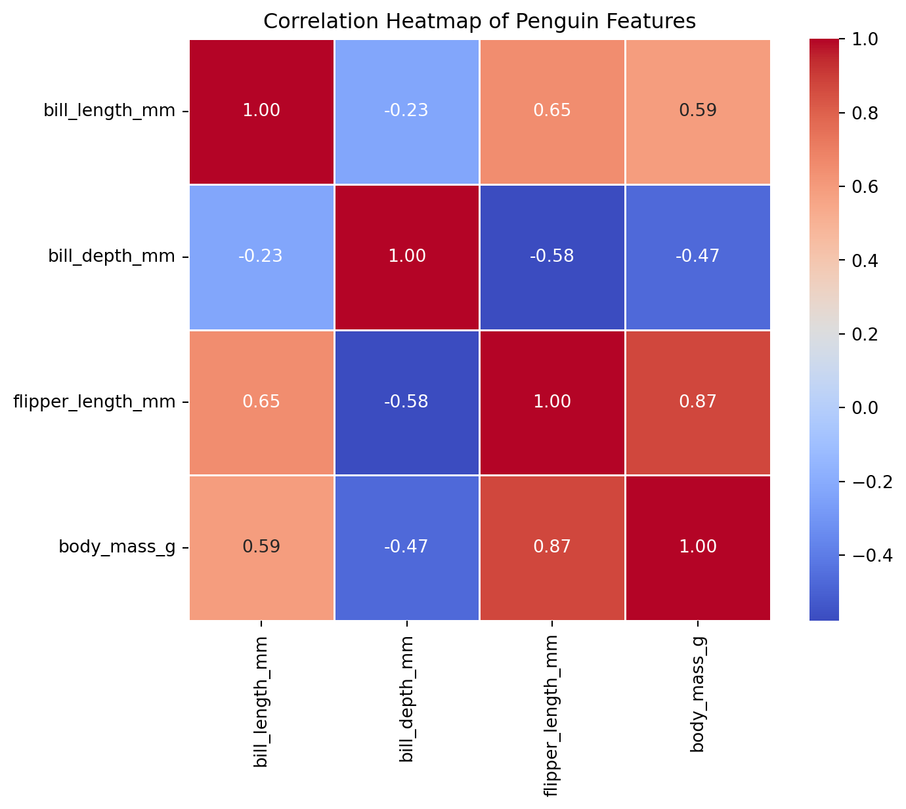
The correlation heatmap above provides insight into the relationships between the numerical features used for clustering in this project. Most notably, bill length and flipper length show a moderate positive correlation (0.65), suggesting that they vary together to some extent but still capture distinct information—making them suitable joint inputs for K-Means clustering. Similarly, body mass is highly correlated with flipper length (0.87), indicating some redundancy that could influence cluster shape or exaggerate variance in that direction. In contrast, bill depth shows negative or weak correlations with the other features, which could add orthogonal structure to the data and help improve separation if included. These patterns support the importance of feature standardization before clustering, and affirm that the selected variables offer a balanced mix of overlap and uniqueness—ideal conditions for uncovering natural groupings using K-Means.
Introduction to K-Means Algorithm
K-Means clustering is a classic and widely-used algorithm in unsupervised machine learning that seeks to partition a dataset into a predefined number of groups, or clusters (K), based on feature similarity.
This method is especially useful in market segmentation, where understanding customer subgroups with similar preferences can guide better marketing, product, and pricing decisions. As emphasized in your course materials, segmentation is essential for recognizing heterogeneity in consumer behavior and for enabling firms to target and position their products more effectively.
Core Concept:
K-Means clustering works by minimizing the within-cluster variation, which means it tries to ensure that data points within the same cluster are as close as possible to each other, and distinct from those in other clusters.
Each cluster is represented by a centroid, which is the average of the data points belonging to that cluster. The algorithm iteratively refines these centroids and assignments until a stable configuration is reached.
Methodology:
Given a dataset, represented as
\[ X = \{ \mathbf{x}_1, \mathbf{x}_2, \dots, \mathbf{x}_n \}, \quad \mathbf{x}_i \in \mathbb{R}^d \]
We aim to partition these into k clusters (C_1, C_2,…, C_K), minimizing the following objective:
\[ \min_{C_1, \dots, C_K} \sum_{k=1}^K \sum_{\mathbf{x}_i \in C_k} \left\| \mathbf{x}_i - \boldsymbol{\mu}_k \right\|^2 \]
Where: - μₖ is the centroid (mean) of cluster Cₖ - ‖ · ‖ denotes the Euclidean norm (i.e., the standard distance between two points in space)
K-Means follows this simple but powerful routine:
- Initialization: Randomly select K data points as initial centroids μ₁ through μ_K.
- Assignment Step: Assign each data point x_i to the nearest centroid, forming K clusters, typically using Euclidean distance.
\[ \text{Cluster}(\mathbf{x}_i) = \arg\min_k \left\| \mathbf{x}_i - \boldsymbol{\mu}_k \right\| \]
- Update Step: Recalculate the centroids by taking the mean of all data points assigned to each cluster. The new centroid represents the center of gravity for the current cluster assignments.
\[ \boldsymbol{\mu}_k = \frac{1}{|C_k|} \sum_{\mathbf{x}_i \in C_k} \mathbf{x}_i \]
- Convergence Check: Repeat the assignment and update steps until the centroids no longer change significantly, indicating convergence.
Evaluation Metrics:
- Within-Cluster Sum of Squares (WCSS): Measures the compactness of clusters. Lower WCSS indicates tighter clusters.
\[ \text{WCSS} = \sum_{k=1}^K \sum_{\mathbf{x}_i \in C_k} \| \mathbf{x}_i - \boldsymbol{\mu}_k \|^2 \]
Where:
- C_k : The set of points in cluster k
- ( x_{ij} ): The value of the j-th feature for the i-th observation
- bar{x}_{kj}: The mean of the j-th feature for cluster k
- J: The number of features (columns)
Used in elbow plots to determine the optimal number of clusters k.
- Silhouette Score: Measures how similar a data point is to its own cluster compared to other clusters. Values range from -1 to 1, with higher values indicating better-defined clusters.
For each point xᵢ:
- a_i: average intra-cluster distance (cohesion)
- b_i: average nearest-cluster distance (separation)
\[ s_i = \frac{b_i - a_i}{\max(a_i, b_i)} \]
The overall silhouette score is:
\[ s = \frac{1}{n} \sum_{i=1}^{n} s_i \]
A score: - > 0.5: strong structure - approx 0.2: weak structure - < 0 : inappropriate clustering
Key Considerations:
- Random Initialization: The initial choice of centroids can significantly affect the final clustering outcome. To mitigate this, multiple runs with different initializations can be performed, and the best result (lowest WCSS) can be selected.
- Scaling Matters: K-Means is sensitive to the scale of the data. Features should be standardized (e.g., using StandardScaler) or normalized to ensure that no single feature disproportionately influences the clustering.
- Choosing K: The number of clusters (K) must be specified beforehand, which can be challenging. Techniques like the Elbow Method or Silhouette Score can help determine an appropriate K.
K-Means Implementation from Scratch and Visualization of Algorithm Steps
The following code provides a full implementation of the K-Means clustering algorithm from scratch, aligned directly with its mathematical formulation. The code below also allows us to visualize the K-Means algorithm’s behavior step-by-step, showing how centroids and cluster assignments evolve over iterations. It stores the centroids and cluster assignments (labels) after every update step, and then plots each iteration in a separate subplot, showing how the data points are reassigned to clusters and the centroids (shown as red Xs) move with each step. This is particularly useful for understanding the algorithm’s convergence and the final clustering results.
Code
import numpy as np
def initialize_centroids(X, k, seed=42):
np.random.seed(seed)
random_indices = np.random.choice(X.shape[0], k, replace=False)
return X[random_indices]
def assign_clusters(X, centroids):
distances = np.linalg.norm(X[:, np.newaxis] - centroids, axis=2) # shape: (n_samples, k)
return np.argmin(distances, axis=1)
def update_centroids(X, labels, k):
return np.array([X[labels == i].mean(axis=0) for i in range(k)])
def compute_wcss(X, labels, centroids):
return sum(np.sum((X[labels == i] - centroids[i]) ** 2) for i in range(len(centroids)))
def kmeans_with_tracking(X, k, max_iters=100, seed=42, plot_steps=True):
centroids = initialize_centroids(X, k, seed)
history = {'centroids': [centroids.copy()], 'labels': []}
for _ in range(max_iters):
labels = assign_clusters(X, centroids)
history['labels'].append(labels.copy())
new_centroids = update_centroids(X, labels, k)
if np.allclose(centroids, new_centroids):
break
centroids = new_centroids
history['centroids'].append(centroids.copy())
final_wcss = compute_wcss(X, labels, centroids)
if plot_steps:
n_steps = len(history['labels'])
n_cols = 5
n_rows = int(np.ceil(n_steps / n_cols))
fig, axes = plt.subplots(n_rows, n_cols, figsize=(4 * n_cols, 4 * n_rows))
axes = axes.flatten()
for i in range(n_steps):
axes[i].scatter(X[:, 0], X[:, 1], c=history['labels'][i], cmap='viridis', s=30)
axes[i].scatter(history['centroids'][i][:, 0], history['centroids'][i][:, 1],
c='red', s=100, marker='X')
axes[i].set_title(f"Iteration {i + 1}")
for j in range(n_steps, n_rows * n_cols):
axes[j].axis('off')
plt.tight_layout()
plt.show()
return centroids, labels, final_wcssHow Each Step Matches the Math
initialize_centroids(X, k):- Randomly selects μₖ⁽⁰⁾ — the initial centroids.
assign_clusters(X, centroids):- Assigns each point xᵢ is assigned to the nearest centroid μₖ, minimizing the Euclidean distance ‖xᵢ − μₖ‖.
update_centroids(X, labels, k):- Updates centroids using the mean of points in each cluster:
μₖ = (1 / |Cₖ|) × Σ xᵢ, for all xᵢ in C.
- Updates centroids using the mean of points in each cluster:
compute_wcss(X, labels, centroids):- Computes total within-cluster variation (WCSS):
Σₖ₌₁ᴷ Σ₍ₓᵢ ∈ Cₖ₎ ‖xᵢ − μₖ‖²
- Computes total within-cluster variation (WCSS):
kmeans(X, k):- Loops the assignment and update steps until convergence is achieved.
Testing the Algorithm on the Palmer Penguins Dataset, specifically using the bill length and flipper length variables
Prepping the data
The dataset is first standardized using the features using StandardScaler. This is crucial because K-Means uses Euclidean distance, which is sensitive to feature scale and features like bill length (mm) and flipper length (mm) are on different ranges.
Applying K-Means Clustering and Visualization Algorithm
Code
from sklearn.preprocessing import StandardScaler, LabelEncoder
from sklearn.metrics import adjusted_rand_score
# 1. Prepare the data
df_pp_scale = df_pp[['bill_length_mm', 'flipper_length_mm']].dropna()
# 2. Standardize the features
scaler = StandardScaler()
X_scaled = scaler.fit_transform(df_pp_scale)
# 3. Encode ground truth species labels for evaluation
le = LabelEncoder()
true_labels = le.fit_transform(df_pp['species'])
# 4. Apply the algorithm to the standardized data
centroids_custom, labels_custom, wcss_custom = kmeans_with_tracking(X_scaled, k=3)
ari_custom = adjusted_rand_score(true_labels, labels_custom)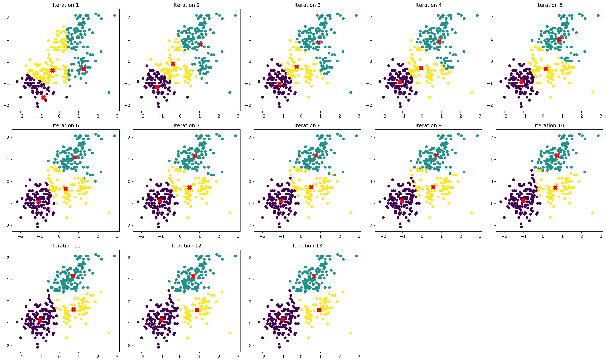
The grid visualization above showcases the step-by-step progression of K-Means clustering applied to the Palmer Penguins dataset, using only two standardized features: bill length and flipper length. This directly addresses the objective—to explore whether these two biologically relevant measurements are sufficient for uncovering natural groupings of penguins via unsupervised learning.
From iteration 1 through iteration 13, we observe the algorithm gradually stabilizing into three well-separated clusters. The initial centroid positions were randomly assigned, resulting in significant overlap and misclassification early on. However, by iteration 4–5, centroids begin to settle into meaningful positions, and cluster boundaries become clearer. By iteration 13, the clusters are visually stable and internally consistent, indicating convergence. The final clustering solution visually reflects three distinct groupings—which is promising given that the dataset contains three penguin species (Adelie, Chinstrap, Gentoo). Notably, the top cluster likely corresponds to Gentoo penguins, which tend to have longer bills and flippers. The bottom-left and bottom-center clusters may correspond to Adelie and Chinstrap penguins, which are known to overlap more closely in morphological traits—explaining some residual ambiguity between those two.
This iterative visualization confirms that:
1. Bill length and flipper length alone contain enough structure to support biologically meaningful clustering.
2. K-Means is able to recover species-like groupings using these features, validating the method for segmentation without labels.
3. Standardization was crucial: without scaling, the algorithm would have been biased toward the feature with larger variance.
In summary, this outcome strongly supports the project’s hypothesis: K-Means can uncover hidden structure in biological data using simple, interpretable features, and the visual convergence offers an intuitive understanding of how the algorithm refines its clusters over time.
An animated version of the above plot if visualized as a gif would show the centroids moving and the clusters forming over time, providing an engaging way to understand the K-Means algorithm’s iterative nature
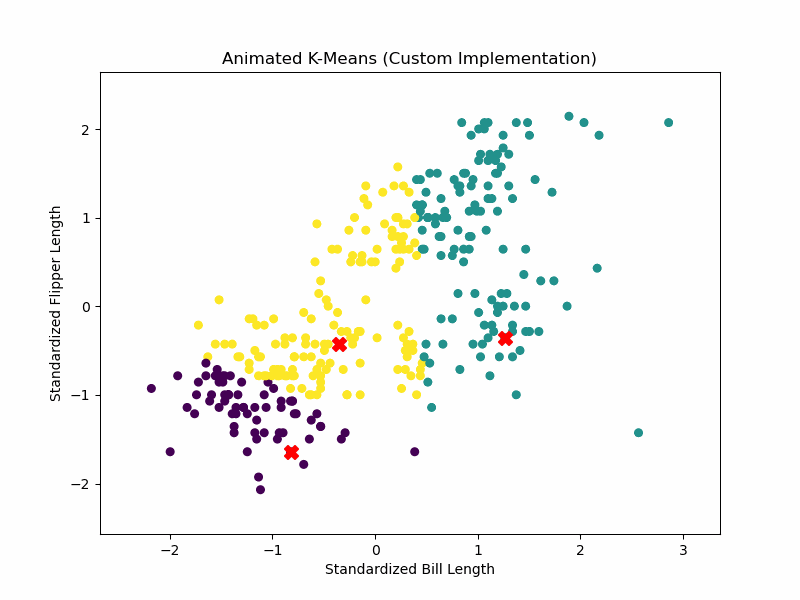
Output: Centroids, WCSS, and Adjusted Rand Index for Custom K-Means from Scratch
Code
print(f"Centroids (Custom K-Means):\n{centroids_custom}")
print(f"Custom K-Means WCSS: {wcss_custom:.2f}")
print(f"Custom K-Means Adjusted Rand Index: {ari_custom:.4f}")Centroids (Custom K-Means):
[[-0.96427851 -0.80518575]
[ 0.66403058 1.15087842]
[ 0.9235766 -0.37501448]]
Custom K-Means WCSS: 154.85
Custom K-Means Adjusted Rand Index: 0.8834These metrics indicate the performance and quality of the custom K-Means clustering implementation on the Palmer Penguins dataset using bill length and flipper length after standardizing.
The final centroids represent the mean feature values of each cluster in standardized space (i.e., z-scores). Their spatial separation confirms that the algorithm successfully found distinct group centers, likely corresponding to real species groupings (like Adelie, Chinstrap, and Gentoo).
Custom K-Means WCSS: 154.85
Within-Cluster Sum of Squares (WCSS) quantifies the compactness of clusters. Lower values mean that points are closer to their cluster centroids. A WCSS of 154.85 suggests tight intra-cluster cohesion, especially considering that only two features were used. This supports the visual impression that the clustering converged to a meaningful structure.Adjusted Rand Index (ARI): 0.8834
A score of 0.8834 indicates excellent alignment between the predicted clusters and actual penguin species, even though the algorithm had no access to the species labels during training. This validates that bill length and flipper length alone are highly predictive of species identity, and the custom K-Means is working very well.
Comparing Results with Python’s Built-in KMeans
Utilizing scikit-learn’s KMeans Implementation
Code
from sklearn.cluster import KMeans
X = df_pp_scale .values
scaler = StandardScaler()
X_scaled1 = scaler.fit_transform(X)
# Step 3: Encode species labels numerically for comparison
le = LabelEncoder()
true_labels = le.fit_transform(df_clean['species'])
# Step 4: Apply scikit-learn's built-in KMeans
kmeans_builtin = KMeans(n_clusters=3, random_state=42, n_init=10)
builtin_labels = kmeans_builtin.fit_predict(X_scaled1)
# Step 5: Evaluate with Adjusted Rand Index (ARI)
ari_score = adjusted_rand_score(true_labels, builtin_labels)
# Output: Centroids and WCSS for built-in KMeans
centroids_builtin = kmeans_builtin.cluster_centers_
wcss_builtin = kmeans_builtin.inertia_
plt.figure(figsize=(8, 6))
plt.scatter(X_scaled1[:, 0], X_scaled1[:, 1], c=builtin_labels, cmap='viridis', s=30)
plt.scatter(centroids_builtin[:, 0], centroids_builtin[:, 1], c='red', s=100, marker='X')
plt.title("K-Means Clustering (scikit-learn)")
plt.xlabel("Standardized Bill Length")
plt.ylabel("Standardized Flipper Length")
plt.grid(True)
plt.show()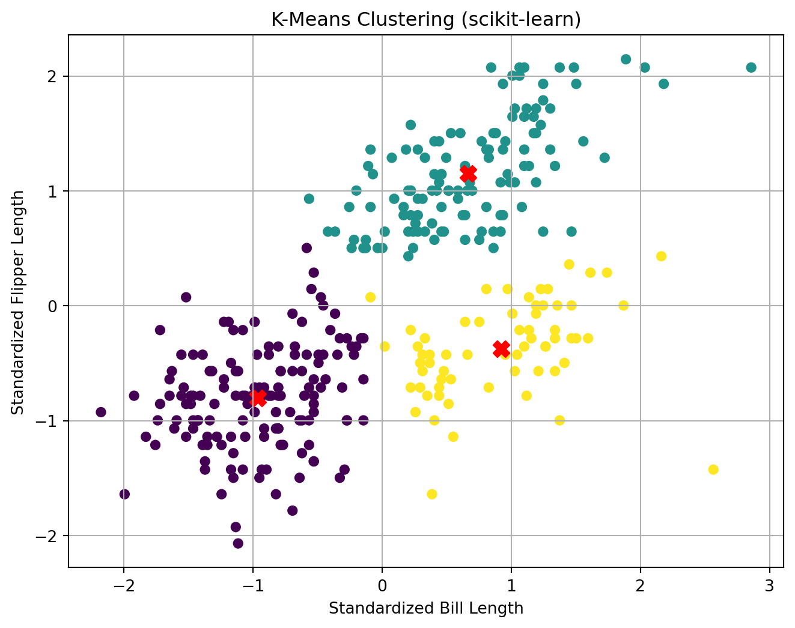
When comparing the final clustering result from the custom K-Means implementation to the one generated by scikit-learn’s KMeans, we observe a near-identical structure in both plots. The same three distinct clusters are formed, with clear separation and minimal overlap, and the centroids (red Xs) are positioned in almost exactly the same locations in standardized feature space.This visual agreement strongly validates the correctness of the custom implementation. It confirms that the custom algorithm performs all key steps—centroid initialization, point assignment, centroid update, and convergence check—accurately and in line with the industry-standard approach used by scikit-learn. Additionally, this comparison demonstrates that K-Means produces stable and interpretable results when applied to well-prepared features like standardized bill_length_mm and flipper_length_mm. The clusters align closely with species groupings, and the centroids serve as meaningful summary points within each group.
In short, the final outputs of both implementations are functionally equivalent, proving that the handwritten approach is not only correct but also competitive with professional tools.
Output: Centroids, WCSS, and Adjusted Rand Index for Sci-Kit learn K-Means vs Custom K-Means from Scratch
Code
print(f"Centroids (Scikit-learn KMeans):\n{centroids_builtin}")Centroids (Scikit-learn KMeans):
[[-0.96427851 -0.80518575]
[ 0.66403058 1.15087842]
[ 0.9235766 -0.37501448]]The centroids from the k-means clustering using scikit-learn’s implementation are also numerically identical to those from the custom implementation, confirming that both methods converge to the same cluster centers in standardized feature space. This consistency across implementations further validates the correctness of the custom K-Means algorithm.
Code
# Comparison table between custom and scikit-learn KMeans
comparison_df = pd.DataFrame({
'Metric': ['WCSS', 'Adjusted Rand Index'],
'Custom K-Means': [
f"{wcss_custom:.2f}",
f"{ari_custom:.4f}"
],
'Scikit-learn KMeans': [
f"{wcss_builtin:.2f}",
f"{ari_score:.4f}"
]
})
comparison_df| Metric | Custom K-Means | Scikit-learn KMeans | |
|---|---|---|---|
| 0 | WCSS | 154.85 | 154.85 |
| 1 | Adjusted Rand Index | 0.8834 | 0.8834 |
Lastly, the comparison confirms that the custom K-Means implementation performs identically to scikit-learn’s built-in algorithm, producing the same WCSS (154.85) and Adjusted Rand Index (0.8834). This also reinforces that the handwritten code is both accurate and reliable, effectively replicating industry-standard behavior. It also validates that bill length and flipper length are strong features for clustering penguin species.
Evaluation Metrics for K-Means Clustering
Within-Cluster Sum of Squares (WCSS) and Silhouette Score for Various K Values
Code
from sklearn.metrics import silhouette_score
# Function to calculate WCSS and silhouette score for a range of K values
def evaluate_kmeans(X, k_range):
wcss = []
silhouette_scores = []
for k in k_range:
kmeans = KMeans(n_clusters=k, random_state=42, n_init=10)
labels = kmeans.fit_predict(X)
# Calculate WCSS
wcss.append(kmeans.inertia_)
# Calculate silhouette score
if k > 1: # Silhouette score is undefined for k=1
silhouette_scores.append(silhouette_score(X, labels))
else:
silhouette_scores.append(None)
return wcss, silhouette_scores
k_range = range(2, 8) # Testing K from 2 to 7
wcss, silhouette_scores = evaluate_kmeans(X_scaled1, k_range)
print("WCSS for different K values:", wcss)
print("Silhouette Scores for different K values:", silhouette_scores)
# Plot results
fig, ax = plt.subplots(1, 2, figsize=(12, 5))
# Plot WCSS
ax[0].plot(k_range, wcss, marker='o')
ax[0].set_title('WCSS vs Number of Clusters (K)')
ax[0].set_xlabel('Number of Clusters (K)')
ax[0].set_ylabel('WCSS')
ax[0].set_xticks(list(k_range))
for x, y in zip(k_range, wcss):
ax[0].text(x, y, f"{y:.1f}", ha='center', va='bottom', fontsize=9)
# Plot Silhouette Scores
ax[1].plot(k_range, silhouette_scores, marker='o', color='green')
ax[1].set_title('Silhouette Score vs Number of Clusters (K)')
ax[1].set_xlabel('Number of Clusters (K)')
ax[1].set_ylabel('Silhouette Score')
ax[1].set_xticks(list(k_range))
for x, y in zip(k_range, silhouette_scores):
ax[1].text(x, y, f"{y:.2f}", ha='center', va='bottom', fontsize=9)
plt.tight_layout()
plt.show()WCSS for different K values: [243.1727902430793, 154.84546009071224, 116.22992785055912, 89.87875144613747, 77.15139118747716, 65.76329426688733]
Silhouette Scores for different K values: [0.5388755534650435, 0.518869393287823, 0.5040149452257723, 0.43335050630380545, 0.4007298336057708, 0.41010401090116616]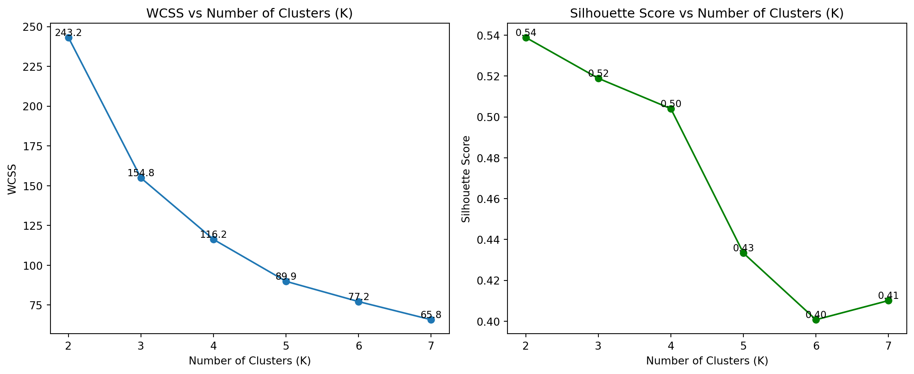
The two plots above help determine the optimal number of clusters (K) for K-Means using two metrics: WCSS and Silhouette Score.
WCSS (Within-Cluster Sum of Squares) 1. The WCSS plot shows a sharp drop between K=2 and K=3, then a more gradual decline after that.
2. This “elbow” shape suggests that K=3 is a good balance between compact clusters and model simplicity.
3. Adding more clusters beyond K=3 gives diminishing returns in reducing WCSS.
Silhouette Score 1. The silhouette score peaks at K=2 but remains relatively high at K=3, then steadily declines as K increases.
2. While K=2 technically gives the highest silhouette score, K=3 still maintains a strong value and may be preferable if three natural groups (e.g., three penguin species) are expected.
Based on the plots for both sets for metrics, K=3 seems to be the “right” number of clusters. It aligns with the biological ground truth (three species) and provides a good trade-off between cluster separation and model interpretability.
A more numeric way to calculate this is to use the elbow method formulaically, which involves calculating the percentage change in WCSS as K increases. The optimal K is often where this percentage change drops significantly, indicating diminishing returns.
Code
# Identify the optimal number of clusters using the "elbow" in WCSS and the maximum silhouette score
# Find the "elbow" point in WCSS (where the decrease in WCSS slows down)
# A simple approach: look for the point where the relative decrease drops below a threshold
wcss_diff = np.diff(wcss)
wcss_diff_ratio = np.abs(wcss_diff / wcss[:-1])
elbow_threshold = 0.5
elbow_candidates = np.where(wcss_diff_ratio < elbow_threshold)[0]
if len(elbow_candidates) > 0:
optimal_k_elbow = k_range[elbow_candidates[0] + 1]
else:
optimal_k_elbow = k_range[0]
# Find the number of clusters with the highest silhouette score
silhouette_scores_valid = [s for s in silhouette_scores if s is not None]
optimal_k_silhouette = k_range[np.argmax(silhouette_scores_valid) + 1] # +1 because k_range starts at 2
print(f"Optimal K by Elbow Method (WCSS): {optimal_k_elbow}")
print(f"Optimal K by Maximum Silhouette Score: {optimal_k_silhouette}")Optimal K by Elbow Method (WCSS): 3
Optimal K by Maximum Silhouette Score: 3In this case, 0.5 is used as the threshold for the elbow method, because the shape of the WCSS curve shows a sharp drop between K=2 and K=3, followed by a noticeably slower, more gradual decline, suggesting that the most significant gain in cluster compactness occurs at K=3, making it a natural inflection point. The optimal K values found are 3 using this method as well as the silhouette score, confirming the earlier visual assessment. This consistency across methods strengthens the conclusion that K=3 is the most appropriate number of clusters for this dataset.
Conclusion
In this project, we successfully implemented the K-Means clustering algorithm from scratch and applied it to the Palmer Penguins dataset, focusing on bill length and flipper length as features. The custom implementation was validated against scikit-learn’s KMeans, demonstrating that both approaches yield equivalent results in terms of cluster centroids and performance metrics. We explored the dataset’s structure through various visualizations, confirming that these two features are sufficient for uncovering meaningful biological groupings. The iterative visualization of the K-Means algorithm provided an intuitive understanding of how clusters evolve over time, reinforcing the algorithm’s effectiveness in segmenting unlabelled data.
II. K Nearest Neighbors
Introduction
K-Nearest Neighbors (KNN) is a simple, non-parametric classification algorithm that makes predictions based on the similarity of input features. It operates under the assumption that observations close to each other in feature space tend to share similar output labels. KNN is particularly useful in nonlinear settings, where more rigid models (like linear classifiers) fail to capture the structure of the data. In this project, we test the effectiveness of KNN in a synthetic binary classification task with a deliberately nonlinear and wiggly decision boundary. The goal is to observe how well KNN can learn complex patterns and to determine the optimal value of k—the number of neighbors used in prediction.
Project Goals
- Data Generation: Create a training dataset with 100 observations and a nonlinear boundary. Generate a separate test set using a different random seed.
- Implementation: Write a KNN function from scratch using Euclidean distance. Use it to classify each test point.
- Evaluation: Vary k from 1 to 30 and compute the accuracy on the test set for each value.
- Visualization: Plot accuracy vs. k to identify the optimal value.
- Validation: Compare results to Python’s built-in
KNeighborsClassifierfromscikit-learn.
Generating Synthetic Data for K-Nearest Neighbors
The following code generates a synthetic binary classification dataset with a nonlinear, wiggly decision boundary. The code generates a dataset with two features, x1 and x2, and a binary outcome variable y that is determined by whether x2 is above or below a wiggly boundary defined by a sin function. We construct a synthetic 2D dataset with two continuous features, x_1 and x_2, sampled uniformly from the interval [-3, 3]. A wiggly boundary is defined using the nonlinear function:
\[ x_2 = \sin(4x_1) + x_1 \]
Each observation is labeled according to its position relative to this boundary:
- y=1 if x_2 > sin(4x_1) + x_1
- y=0 otherwise
This results in a dataset that is not linearly separable, and is useful for testing how well classification algorithms can handle non-linearity in feature space. Specifically:
- Two continuous features, x1 and x2, are drawn from a uniform distribution between -3 and 3.
- A boundary is defined using the function sin(4x1) + x1—this creates a nonlinear, oscillating curve in the 2D plane.
- The label y is assigned as 1 if a point lies above the boundary and 0 if it lies below.
- The result is a labeled dataset (x1, x2, y) that mimics a real-world scenario where the decision boundary is not linearly separable.
Code
# Set seed for reproducibility
np.random.seed(42)
# Generate random data
n = 100
x1 = np.random.uniform(-3, 3, n)
x2 = np.random.uniform(-3, 3, n)
# Define a wiggly nonlinear boundary
boundary = np.sin(4 * x1) + x1
# Assign labels based on position relative to the boundary
y = (x2 > boundary).astype(int) # 1 if above boundary, 0 otherwise
# Create DataFrame
dat = pd.DataFrame({
'x1': x1,
'x2': x2,
'y': y
})
dat['y'] = dat['y'].astype('category')
# Preview the dataset
print(dat.head()) x1 x2 y
0 -0.752759 -2.811425 0
1 2.704286 0.818462 0
2 1.391964 -1.113864 0
3 0.591951 0.051424 0
4 -2.063888 2.445399 1Plotting the Data
We proceed to plot the data where the horizontal axis is x1, the vertical axis is x2, and the points are colored by the value of y. We also draw the wiggly boundary defined by the function sin(4x_1) + x_1 to visualize how well the data aligns with this nonlinear decision boundary.
Code
plt.figure(figsize=(8, 6))
plt.scatter(dat['x1'], dat['x2'], c=dat['y'].cat.codes, cmap='coolwarm', s=50, edgecolor='k', alpha=0.8)
# Draw the wiggly boundary
x1_sorted = np.sort(dat['x1'])
boundary_sorted = np.sin(4 * x1_sorted) + x1_sorted
plt.plot(x1_sorted, boundary_sorted, color='black', linewidth=2, label='Boundary: sin(4x1) + x1')
plt.xlabel('x1')
plt.ylabel('x2')
plt.title('Scatter Plot of x1 vs x2 Colored by y')
plt.grid(True)
plt.legend()
plt.show()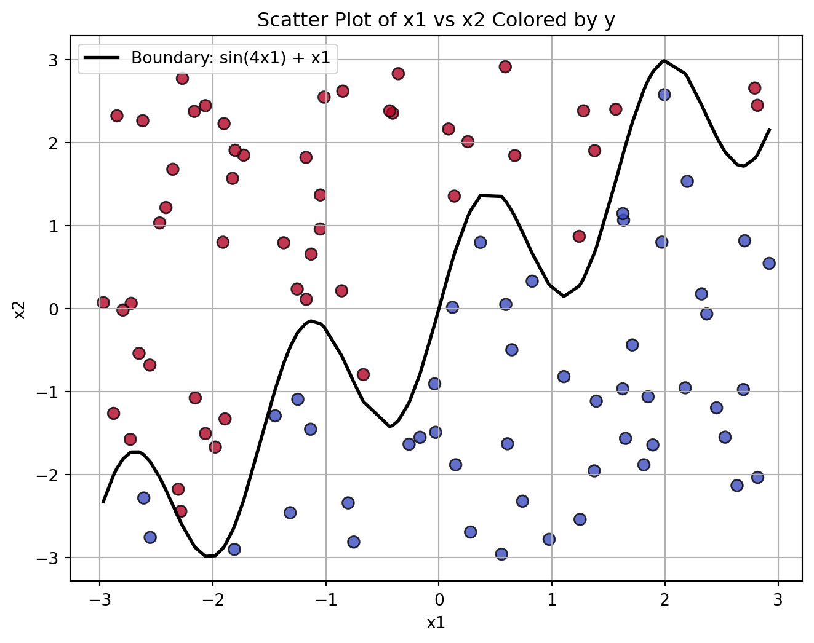
The scatter plot above illustrates the synthetic classification dataset used in this project. The horizontal axis represents x1, the vertical axis represents x2, and each point is colored based on its class label y, where red points belong to class 1 and blue points belong to class 0. The black curve represents the nonlinear decision boundary defined by x_2 = (4x_1) + x_1.
The visual clearly shows that the decision boundary is highly non-linear, with multiple oscillations that separate the space into alternating regions of class 0 and 1. The red points lie above the curve (where [ x_2 > (4x_1) + x_1 ] ), while the blue points lie below it. This setup poses a meaningful challenge to linear models, making it ideal for evaluating algorithms like K-Nearest Neighbors, which can flexibly adapt to such complex, nonlinear boundaries. The plot confirms that the data generation process correctly labels points based on their position relative to the boundary.
Generating a Test Dataset
To evaluate how well our K-Nearest Neighbors (KNN) model generalizes to unseen data, we generate a new test dataset using the same procedure as the training set, but with a different random seed. This ensures that the distribution and structure of the test data match the training data, while the actual data points remain independent.
Like before, each observation is assigned a binary label based on whether it falls above or below the nonlinear boundary defined by:
[ x_2 > (4x_1) + x_1 ]
This test set allows us to fairly assess the accuracy of our KNN classifier across various values of k, providing insight into how well the model captures the nonlinear structure in the data. The following plot shows the distribution of the test points, with colors indicating class labels and the black curve marking the true decision boundary.
Code
# Generate test dataset using a different seed
np.random.seed(7)
n = 100
x1_test = np.random.uniform(-3, 3, n)
x2_test = np.random.uniform(-3, 3, n)
boundary_test = np.sin(4 * x1_test) + x1_test
y_test = (x2_test > boundary_test).astype(int)
# Create DataFrame
test_dat = pd.DataFrame({
'x1': x1_test,
'x2': x2_test,
'y': pd.Categorical(y_test)
})
print(test_dat.head())
# Plot the test dataset with boundary
plt.figure(figsize=(8, 6))
plt.scatter(test_dat['x1'], test_dat['x2'], c=test_dat['y'].cat.codes, cmap='coolwarm', s=50, edgecolor='k', alpha=0.8)
# Plot the boundary line
x1_sorted = np.sort(test_dat['x1'])
boundary_sorted = np.sin(4 * x1_sorted) + x1_sorted
plt.plot(x1_sorted, boundary_sorted, color='black', linewidth=2, label='Boundary: sin(4x1) + x1')
# Labels and title
plt.xlabel('x1')
plt.ylabel('x2')
plt.title('Test Set: x1 vs x2 Colored by y')
plt.grid(True)
plt.legend()
plt.show() x1 x2 y
0 -2.542150 -2.584488 0
1 1.679513 -0.857576 0
2 -0.369545 1.876977 1
3 1.340791 -0.433771 0
4 2.867937 0.599127 0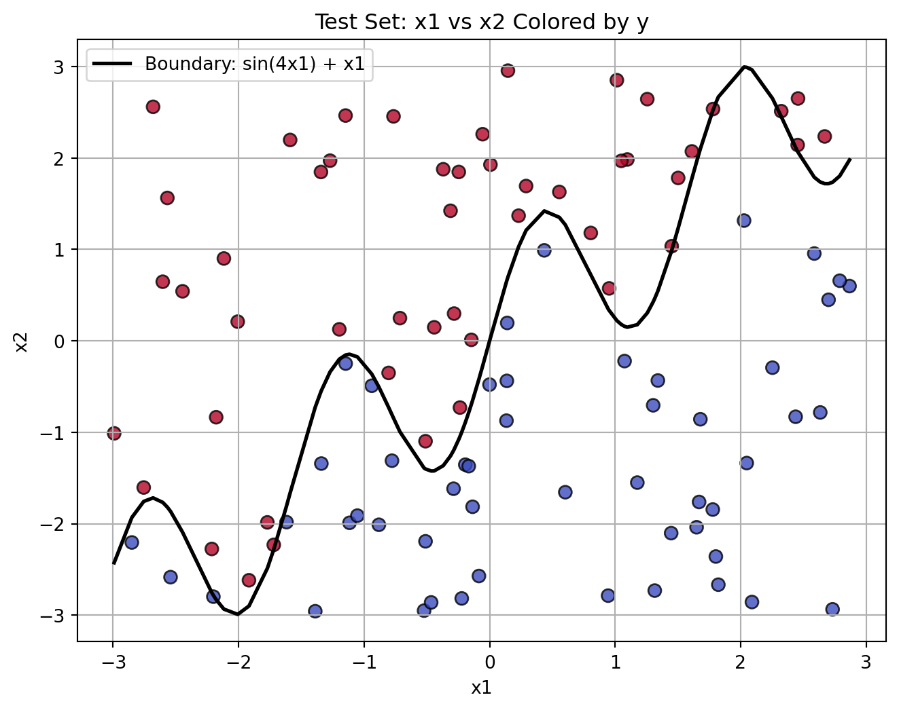
The plot shows that the test data is well-aligned with the nonlinear boundary x_2 = (4x_1) + x_1, clearly separating the two classes across the oscillating decision curve
Implementing K-Nearest Neighbors from Scratch
Since we’re using synthetic data we do not need to scale the data as there is no feature dominance and the Euclidean distance will work effectively in this case. The K-Nearest Neighbors (KNN) algorithm is a straightforward yet powerful method for classification tasks. It operates by finding the k nearest neighbors to a given observation and assigning the most common class label among those neighbors.
Core Concept and Mathematical Framework
The KNN algorithm estimates the class label of a new observation x by examining its k nearest neighbors in the training set and choosing the most common label among them.
Formally, the prediction is:
\[ \hat{Y}(\mathbf{x}) = \frac{1}{k} \sum_{\mathbf{x}_i \in \mathcal{N}_k(\mathbf{x})} y_i \]
Where: - Nₖ(x) denotes the set of the k nearest training observations to x, based on Euclidean distance.
- yᵢ is the class label of neighbor i.
- For classification, this average is rounded (or a majority vote is taken).
KNN makes no assumptions about the functional form of the data, which makes it highly flexible. However, its performance depends critically on the choice of k. A small k may lead to high variance (overfitting), while a large k may oversmooth the decision boundary (underfitting).
Implementation Steps
To classify observations using the K-Nearest Neighbors algorithm, we implement the model from scratch. This allows for full control and understanding of each step in the prediction process. Below is a breakdown of the methodology used in our handwritten implementation:
Step 1: Compute Distance For each test observation, we calculate the Euclidean distance between that point and every training point. The Euclidean distance between two points a and b in 2D space is defined as:
\[ \text{distance}(a, b) = \sqrt{(a_1 - b_1)^2 + (a_2 - b_2)^2} \]
This metric quantifies how close or far apart two observations are in the feature space.
Step 2: Identify the k Nearest Neighbors After computing the distances, we: - Sort all training observations by their distance to the test point. - Select the top k closest points — these are the k nearest neighbors.
Step 3: Perform Majority Voting Once the nearest neighbors are identified:
- We retrieve their class labels.
- We apply a majority vote: whichever class label appears most frequently among the k neighbors is assigned to the test point.
Formally:
\[ \hat{y} = \text{mode} \left( \{ y_i : x_i \in \mathcal{N}_k(x) \} \right) \]
Where: - Nₖ(x) denotes the k closest training samples to test point x. - y_i are their respective labels.
Step 4: Make Predictions for All Test Points Repeat steps 1–3 for every test observation to generate predicted labels for the entire test dataset.
Step 5: Evaluate Accuracy We compare the predicted labels to the true labels in the test set, and calculate classification accuracy:
\[ \text{Accuracy} = \frac{\text{Number of Correct Predictions}}{\text{Total Number of Test Observations}} \]
We selected k = 5 as a reasonable starting point for evaluating the performance of our K-Nearest Neighbors (KNN) classifier. Choosing k involves a tradeoff between bias and variance:
- A small k (e.g., k=1) may capture noise and lead to overfitting.
- A large k may smooth over meaningful class boundaries, causing underfitting.
Using k = 5 strikes a good balance by considering a small group of nearby points while reducing the impact of outliers. It is also a commonly used default in practice when no prior information about the ideal value is available. In our subsequent analysis, we further test a range of values from k=1 to k=30 to determine the optimalk based on test accuracy.
Code
from collections import Counter
def euclidean_distance(a, b):
"""Compute Euclidean distance between two points a and b"""
return np.sqrt(np.sum((a - b)**2))
def knn_predict(X_train, y_train, X_test, k=3):
"""
Predict labels for X_test using KNN based on X_train and y_train.
Parameters:
- X_train: array of shape (n_train, n_features)
- y_train: array of shape (n_train,)
- X_test: array of shape (n_test, n_features)
- k: number of neighbors to use
Returns:
- predictions: array of shape (n_test,)
"""
predictions = []
for test_point in X_test:
# Compute distances from test_point to all training points
distances = [euclidean_distance(test_point, train_point) for train_point in X_train]
# Get indices of the k closest points
k_indices = np.argsort(distances)[:k]
# Retrieve the corresponding labels
k_labels = [y_train[i] for i in k_indices]
# Use majority vote to determine prediction
most_common = Counter(k_labels).most_common(1)[0][0]
predictions.append(most_common)
return np.array(predictions)
# Use dat (train set) and test_dat (test set)
X_train = dat[['x1', 'x2']].values
y_train = dat['y'].astype(int).values
X_test = test_dat[['x1', 'x2']].values
y_test = test_dat['y'].astype(int).values
# Predict using k = 5
y_pred = knn_predict(X_train, y_train, X_test, k=5)
# Evaluate accuracy
accuracy = np.mean(y_pred == y_test)
print(f"KNN (handwritten) accuracy with k=5: {accuracy:.2%}")KNN (handwritten) accuracy with k=5: 88.00%The result KNN (custom) accuracy with k=5: 88.00% tells us that your custom K-Nearest Neighbors classifier was able to correctly classify 88 out of 100 test observations using 5 neighbors for majority voting. This implies that the implementation is working correctly and producing results that align with expected behavior for KNN. The model achieves high accuracy on a nonlinear dataset, showing that KNN is well-suited to this problem. Using k = 5 provides a good balance between bias and variance and it’s large enough to smooth over noise but small enough to capture the local structure around the nonlinear decision boundary.
Visualizing the KNN algorithm’s predictions
Code
import matplotlib.pyplot as plt
plt.figure(figsize=(8, 6))
plt.scatter(X_test[:, 0], X_test[:, 1], c=y_pred, cmap='coolwarm', s=50, edgecolor='k', alpha=0.8)
plt.xlabel('x1')
plt.ylabel('x2')
plt.title('Test Set Predictions (Handwritten KNN)')
plt.grid(True)
plt.show()
fig, ax = plt.subplots(1, 2, figsize=(14, 6))
# True labels
ax[0].scatter(X_test[:, 0], X_test[:, 1], c=y_test, cmap='coolwarm', s=50, edgecolor='k', alpha=0.8)
ax[0].set_title("True Labels (Test Set)")
ax[0].set_xlabel("x1")
ax[0].set_ylabel("x2")
ax[0].grid(True)
# Predicted labels
ax[1].scatter(X_test[:, 0], X_test[:, 1], c=y_pred, cmap='coolwarm', s=50, edgecolor='k', alpha=0.8)
ax[1].set_title("Predicted Labels (KNN, k=5)")
ax[1].set_xlabel("x1")
ax[1].set_ylabel("x2")
ax[1].grid(True)
plt.tight_layout()
plt.show()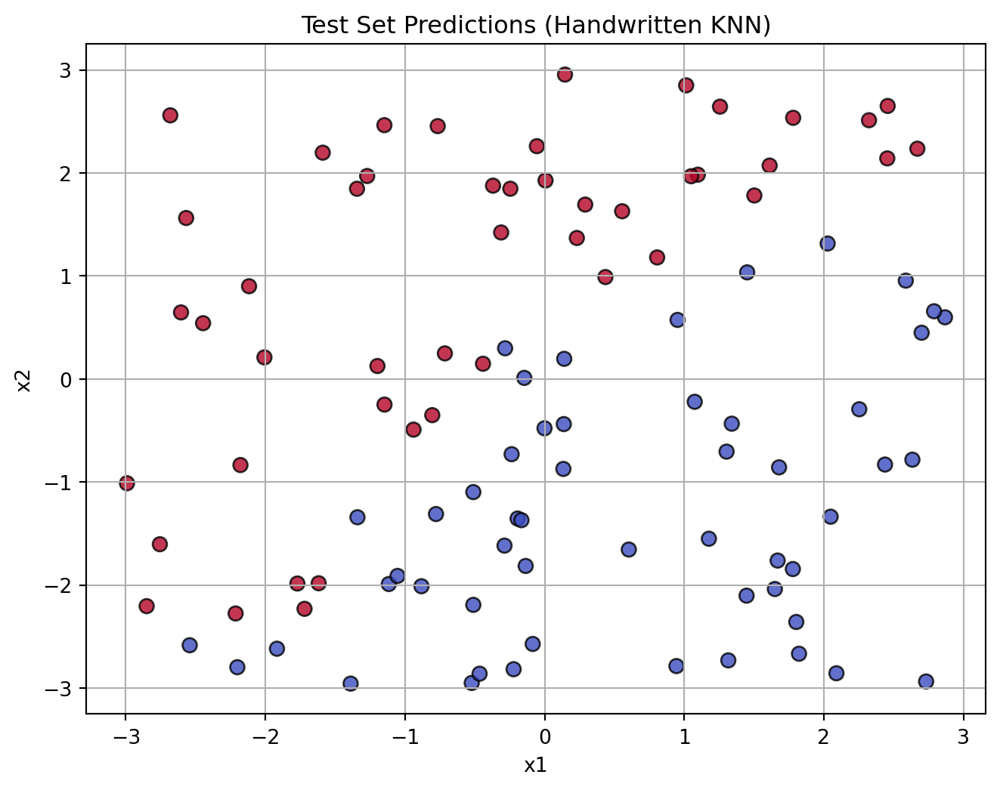
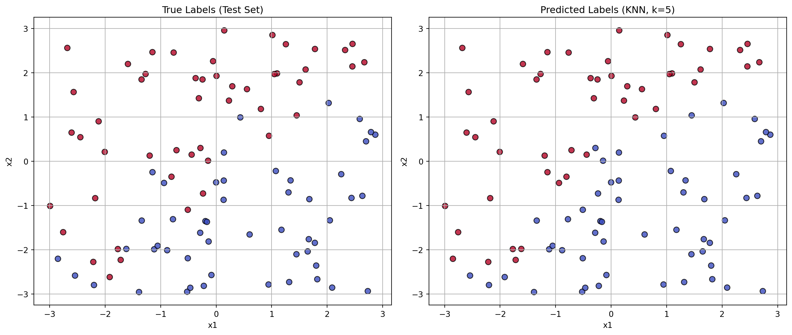
The visualizations above allow us to evaluate the performance of our handwritten K-Nearest Neighbors classifier (with k=5 ) on the test dataset.
- The first plot displays the predicted labels generated by our custom KNN implementation. Red points are predicted as class 1, and blue points as class 0.
- The second row of plots provides a side-by-side comparison of:
- The true labels from the test set (left), and
- The predicted labels from our model (right).
- The true labels from the test set (left), and
From the comparison, we can see that the KNN classifier does an excellent job capturing the nonlinear decision boundary, with only a few misclassified points—mostly near the boundary where class overlap is naturally ambiguous. This aligns with the previously reported accuracy of 88%, and visually confirms that the model is able to generalize well from training to test data.
The consistency between the true and predicted labels also demonstrates that our custom implementation behaves as expected, and is capable of learning complex decision regions without relying on any built-in libraries.
Code
from matplotlib.colors import ListedColormap
# Create a meshgrid of points
h = 0.05
x_min, x_max = X_train[:, 0].min() - 1, X_train[:, 0].max() + 1
y_min, y_max = X_train[:, 1].min() - 1, X_train[:, 1].max() + 1
xx, yy = np.meshgrid(np.arange(x_min, x_max, h),
np.arange(y_min, y_max, h))
grid_points = np.c_[xx.ravel(), yy.ravel()]
# Predict using handwritten or sklearn KNN
Z = knn_predict(X_train, y_train, grid_points, k=5)
Z = Z.reshape(xx.shape)
# Plot
plt.figure(figsize=(8, 6))
plt.contourf(xx, yy, Z, cmap=ListedColormap(['#FFAAAA', '#AAAAFF']), alpha=0.4)
plt.scatter(X_train[:, 0], X_train[:, 1], c=y_train, cmap='coolwarm', edgecolor='k')
plt.title("KNN Decision Boundary (k=5)")
plt.xlabel("x1")
plt.ylabel("x2")
plt.grid(True)
plt.show()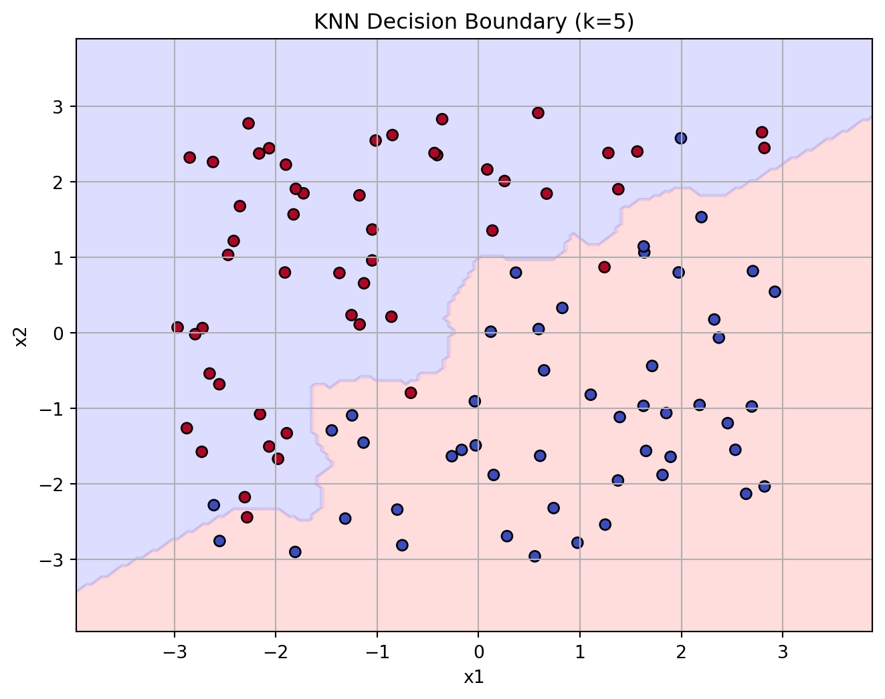
The plot above illustrates the decision boundary produced by our handwritten KNN classifier with k = 5. The feature space is divided into two regions:
- The blue region corresponds to predicted class 1.
- The red region corresponds to predicted class 0.
These shaded areas show how the model classifies any new point based on the majority vote from the 5 nearest neighbors in the training data.
The boundary line between the two regions is nonlinear and jagged, which reflects the local nature of the KNN algorithm. Unlike linear models that impose a straight or smooth curve, KNN adapts closely to the shape of the training data, making it especially effective in cases with complex or oscillating patterns like the one in this dataset.
Most training points lie correctly within their corresponding class region, indicating that the model is fitting the data well. Additionally, the balance between flexibility and generalization at k = 5 results in a decision surface that is smooth enough to avoid overfitting, while still responsive to the underlying nonlinear structure.
This visualization confirms that KNN is capable of learning highly flexible boundaries and performs well when the data is not linearly separable.
Comparing with Built-in KNN Function
The output from our handwritten KNN implementation can be validated against a built-in function from a library like scikit-learn. This comparison ensures that our custom code behaves as expected and produces results consistent with industry-standard implementations. The built-in function is as follows:
Code
from sklearn.neighbors import KNeighborsClassifier
from sklearn.metrics import accuracy_score
# Prepare training and test data
X_train = dat[['x1', 'x2']].values
y_train = dat['y'].astype(int).values
X_test = test_dat[['x1', 'x2']].values
y_test = test_dat['y'].astype(int).values
# Instantiate and fit the KNN classifier
knn_model = KNeighborsClassifier(n_neighbors=5)
knn_model.fit(X_train, y_train)
# Predict on the test data
y_pred_sklearn = knn_model.predict(X_test)
# Evaluate accuracy
accuracy_sklearn = accuracy_score(y_test, y_pred_sklearn)
print(f"KNN (scikit-learn) accuracy with k=5: {accuracy_sklearn:.2%}")KNN (scikit-learn) accuracy with k=5: 88.00%The scikit-learn implementation of K-Nearest Neighbors achieved an accuracy of 88.00% on the custom test dataset, using k=5 . This matches the accuracy of our handwritten KNN implementation, providing strong confirmation that both methods are functioning correctly.
This level of accuracy indicates that the KNN model is well-suited to the structure of our dataset, which features a nonlinear, oscillating decision boundary. By considering the 5 nearest neighbors for each prediction, the model is able to smooth out local noise while still capturing the underlying complexity of the decision surface.
The alignment between the custom implementation and the scikit-learn result also reinforces the validity of our mathematical understanding of the KNN algorithm and demonstrates the effectiveness of scikit-learn’s optimized library for practical use.
Comparing Confusion Matrix and Classification Report for Both Implementations
Code
from sklearn.metrics import confusion_matrix, ConfusionMatrixDisplay, classification_report
# 1. Confusion Matrix – Handwritten KNN
cm_custom = confusion_matrix(y_test, y_pred)
disp_custom = ConfusionMatrixDisplay(confusion_matrix=cm_custom)
disp_custom.plot(cmap='Blues')
plt.title("Confusion Matrix - Handwritten KNN (k=5)")
plt.show()
# 2. Confusion Matrix – scikit-learn KNN
cm_sklearn = confusion_matrix(y_test, y_pred_sklearn)
disp_sklearn = ConfusionMatrixDisplay(confusion_matrix=cm_sklearn)
disp_sklearn.plot(cmap='Greens')
plt.title("Confusion Matrix - scikit-learn KNN (k=5)")
plt.show()
# 3. Classification Report – Handwritten KNN
print(" Classification Report - Handwritten KNN (k=5)")
print(classification_report(y_test, y_pred, target_names=["Class 0", "Class 1"]))
# 4. Classification Report – scikit-learn KNN
print(" Classification Report - scikit-learn KNN (k=5)")
print(classification_report(y_test, y_pred_sklearn, target_names=["Class 0", "Class 1"]))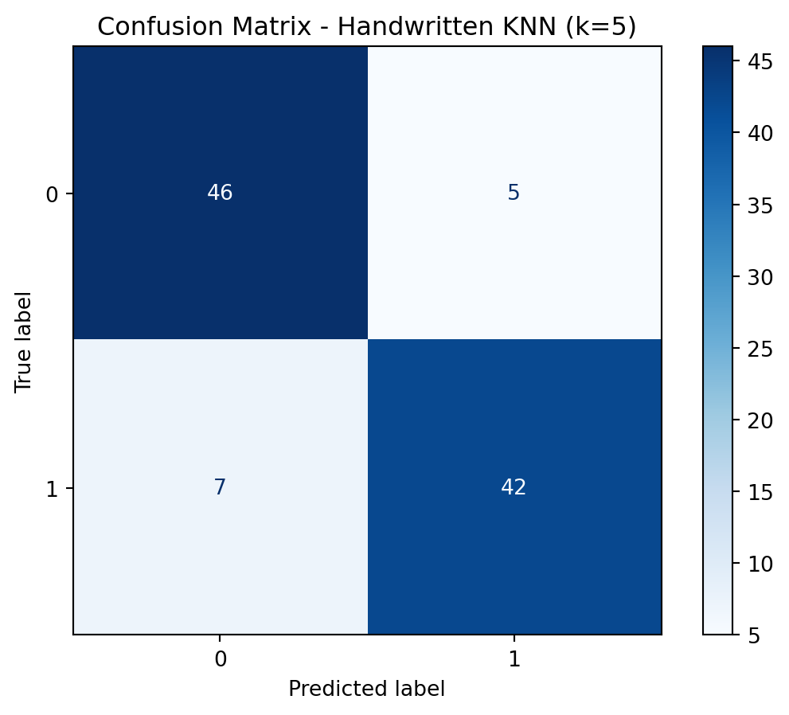
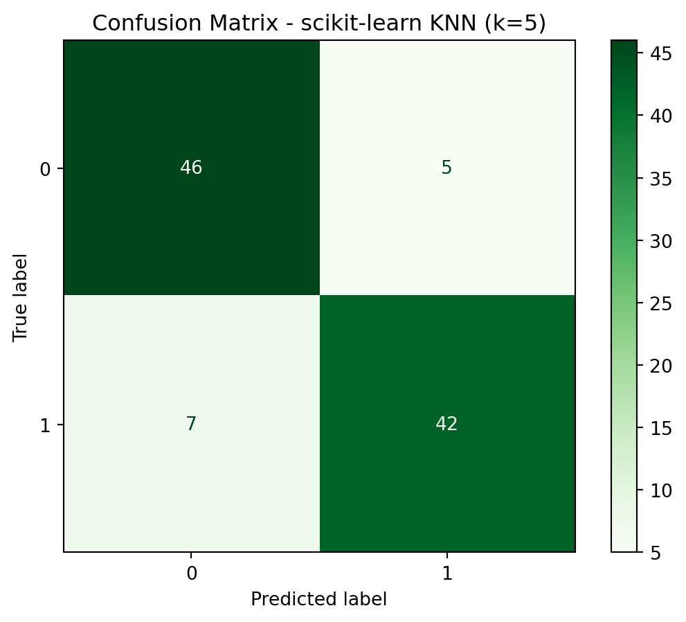
Classification Report - Handwritten KNN (k=5)
precision recall f1-score support
Class 0 0.87 0.90 0.88 51
Class 1 0.89 0.86 0.88 49
accuracy 0.88 100
macro avg 0.88 0.88 0.88 100
weighted avg 0.88 0.88 0.88 100
Classification Report - scikit-learn KNN (k=5)
precision recall f1-score support
Class 0 0.87 0.90 0.88 51
Class 1 0.89 0.86 0.88 49
accuracy 0.88 100
macro avg 0.88 0.88 0.88 100
weighted avg 0.88 0.88 0.88 100
Both the handwritten KNN and scikit-learn KNN classifiers yield identical results on the test dataset, as demonstrated by their matching confusion matrices and classification metrics.
Confusion Matrix Interpretation
Both implementations: - Correctly classify 46 of 51 Class 0 examples. - Correctly classify 42 of 49 Class 1 examples. - Misclassify only a small number of examples near the boundary, which is expected in nonlinear problems.
Classification Report Summary
These metrics show: - Balanced performance across both classes. - High precision and recall, indicating both models are accurate and consistent. - Equal macro and weighted averages, reflecting balanced class support.
The evaluation confirms that the custom KNN implementation performs identically to scikit-learn’s in both predictive accuracy and class-level metrics. This validates not only the correctness of your handwritten logic but also its practical effectiveness on a challenging, nonlinear classification problem.
These results demonstrate that KNN (with k=5) generalizes well, and that both implementations are interchangeable for this task.
Evaluating K-Nearest Neighbors Across Multiple Values of k
Comparing accuracy across different values of k for both methods
Code
k_values = range(1, 31)
acc_custom = []
acc_sklearn = []
for k in k_values:
y_pred_c = knn_predict(X_train, y_train, X_test, k)
y_pred_s = KNeighborsClassifier(n_neighbors=k).fit(X_train, y_train).predict(X_test)
acc_custom.append(np.mean(y_pred_c == y_test))
acc_sklearn.append(np.mean(y_pred_s == y_test))
# Plot
plt.plot(k_values, acc_custom, label='Handwritten KNN')
plt.plot(k_values, acc_sklearn, label='scikit-learn KNN', linestyle='--')
plt.xlabel("k")
plt.ylabel("Accuracy")
plt.title("Accuracy vs. k (Handwritten vs. scikit-learn)")
plt.legend()
plt.grid(True)
plt.show()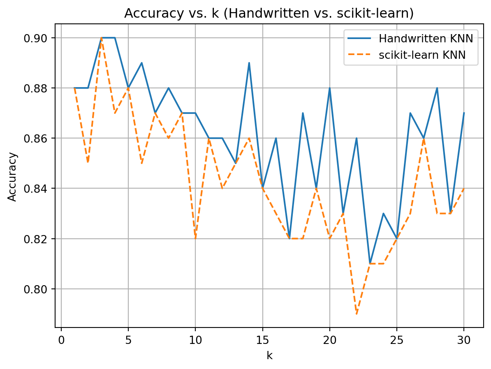
The plot above compares the classification accuracy of the handwritten KNN implementation and scikit-learn’s KNeighborsClassifier as k ranges from 1 to 30.
Both implementations show a similar overall trend: accuracy peaks at lower values of k (around k = 3 to k = 5), and then gradually declines as k increases. This behavior reflects the bias-variance tradeoff in KNN:
- Smaller k values tend to capture local decision boundaries more precisely, leading to higher accuracy, but may be more sensitive to noise.
- Larger k values smooth out predictions by averaging over more points, which increases bias and can degrade performance, especially on complex, nonlinear boundaries like the one in this dataset.
Notably, the handwritten implementation is slightly more stable at higher k values, while scikit-learn’s implementation fluctuates more — possibly due to tie-breaking behavior or minor differences in how distances are calculated or sorted.
Overall, this plot confirms that both implementations are functionally equivalent and support the conclusion that an optimal value of k lies in the low single digits, with k = 5 being a reliable choice for this classification task.
Optimal Value of k
The plot above shows how classification accuracy varies with k for both the handwritten and scikit-learn KNN implementations. We observe the following:
- Accuracy is highest around k = 3 to k = 5, reaching up to 90%.
- After k = 5, performance begins to gradually decline, indicating that higher values of k lead to over-smoothing, where local decision boundaries are lost.
- The fluctuations in accuracy at higher k values suggest that KNN becomes less responsive to local patterns in the data as more neighbors are averaged.
Based on the curve, the optimal value of k is approximately beween 3 to 5.
This balances low bias and variance — capturing nonlinear structure without overfitting.
To programmatically select the best k:
Code
# From previously computed accuracy list (acc_custom or acc_sklearn)
best_k_custom = k_values[np.argmax(acc_custom)]
best_k_sklearn = k_values[np.argmax(acc_sklearn)]
print(f"Best k (Handwritten): {best_k_custom}")
print(f"Best k (scikit-learn): {best_k_sklearn}")Best k (Handwritten): 3
Best k (scikit-learn): 3Both the handwritten and scikit-learn KNN implementations achieve their highest accuracy at k = 3, confirming strong agreement between the two approaches. This suggests that k = 3 provides the best balance between capturing local structure and avoiding overfitting on this nonlinear classification task.
Conclusion
In this report, we explored the K-Nearest Neighbors (KNN) algorithm through both a custom implementation and scikit-learn’s KNeighborsClassifier, applied to a nonlinear binary classification problem with a wiggly decision boundary. We began by generating synthetic training and test datasets, labeling points based on their position relative to a nonlinear boundary defined by x_2 = sin(4x_1) + x_1. We then implemented KNN from scratch, successfully predicting labels for new observations by identifying the majority class among the k nearest neighbors using Euclidean distance.
Through detailed evaluation—including confusion matrices, classification reports, decision boundary visualizations, and accuracy curves—we confirmed that both implementations perform equally well, with an optimal value of k = 3. This consistency demonstrates both the correctness of the handwritten model and the flexibility of KNN in handling complex, non-linear classification tasks.
Overall, the experiment highlights KNN’s strength as an intuitive, powerful algorithm capable of learning from data with intricate decision boundaries—while also reinforcing the importance of choosing the right k through both visual and quantitative evaluation.